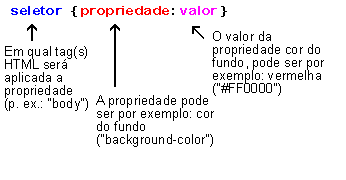
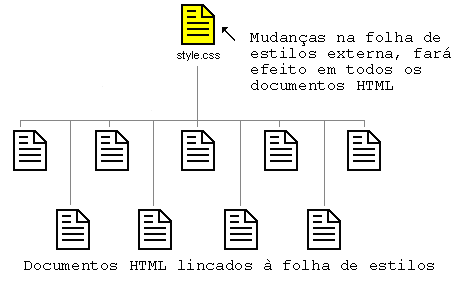

Lição 2: Como funciona CSS?
Nesta lição você aprenderá a desenvolver sua primeira folha de estilos. Você verá o básico sobre o modelo CSS e que código é necessário para usar CSS em um documento HTML.
Muitas das propriedades usadas em Cascading Style Sheets (CSS) são semelhantes àquelas do HTML. Assim, se você está acostumado a usar HTML para layout irá reconhecer muitos dos códigos que usaremos. Vamos dar uma olhada em um exemplo concreto.
A sintaxe básica das CSS
Suponha que desejamos uma cor de fundo vermelha para a página web:
Usando HTML podemos fazer assim:
<body bgcolor="#FF0000">
Com CSS o mesmo resultado será obtido assim:
body {background-color: #FF0000;}
Como você pode notar os códigos HTML e CSS são mais ou menos parecidos. O exemplo acima serve também para demonstrar o fundamento do modelo CSS:

Mas, onde colocar o código CSS? É isto que veremos a seguir.
Aplicando CSS a um documento HTML
Você pode aplicar CSS a um documento de três maneiras distintas. Os três métodos de aplicação estão exemplificados a seguir. Recomendamos que você foque no terceiro método, ou seja o método externo.
Método 1: In-line (o atributo style)
Uma maneira de aplicar CSS é pelo uso do atributo style do HTML. Tomando como base o exemplo mostrado anteriormente a cor vermelha para o fundo da página pode ser aplicada conforme mostrado a seguir:
<html><head><title>Exemplo</title></head><body style="background-color: #FF0000;"><p>Esta é uma página com fundo vermelho</p></body></html>
Método 2: Interno (a tag style)
Uma outra maneira de aplicar CSS e pelo uso da tag <style> do HTML. Como mostrado a seguir:
<html><head><title>Exemplo</title><style type="text/css">body {background-color: #FF0000;}</style></head><body><p>Esta é uma página com fundo vermelho</p></body></html>
Método 3: Externo (link para uma folha de estilos)
O método recomendado é o de lincar para uma folha de estilos externa. Usaremos este método nos exemplos deste tutorial.
Uma folha de estilos externa é um simples arquivo de texto com a extensão .css. Tal como com qualquer outro tipo de arquivo você pode colocar uma folha de estilos tanto no servidor como no disco rígido.
Vamos supor, por exemplo, que sua folha de estilos tenha sido nomeada de style.css e está localizada no diretório style. Tal situação está mostrada a seguir:

O "truque" é criar um link no documento HTML (default.htm) para a folha de estilos (style.css). O link é criado em uma simples linha de código HTML como mostrado a seguir:
<link rel="stylesheet" type="text/css" href="style/style.css" />
Notar que o caminho para a folha de estilos é indicado no atributo href.
Esta linha de código deve ser inserida na seção header do documento HTML, isto é, entre as tags <head> e </head>. Conforme mostrado abaixo:
<html><head><title>Meu documento</title><link rel="stylesheet" type="text/css" href="style/style.css" /></head><body>...
Este link informa ao navegador para usar o arquivo CSS na renderização e apresentação do layout do documento HTML.
A coisa realmente inteligente disto é que vários documentos HTML podem lincar para uma mesma folha de estilos. Em outras palavras isto significa que um simples arquivo será capaz de controlar a apresentação de muitos documentos HTML.

Esta técnica pode economizar uma grande quantidade de trabalho. Se por exemplo, você quiser trocar a cor do fundo de um site com 100 páginas, a folha de estilos evita que você edite manualmente uma a uma as páginas para fazer a mudança nos 100 documentos HTML. Usando CSS a mudança se fará em uns poucos segundos trocando-se a cor em uma folha de estilos central.
Vamos praticar o que aprendemos.
Faça você mesmo
Abra o Notepad (ou qualquer outro editor de texto que queira usar) e crie dois arquivos — um arquivo HTML e um arquivo CSS — com os seguintes conteúdos:
default.htm
<html><head><title>Meu documento</title><link rel="stylesheet" type="text/css" href="style.css" /></head><body><h1>Minha primeira folha de estilos</h1></body></html>
style.css
body {background-color: #FF0000;}
Salve os dois arquivos no mesmo diretório. Lembre-se de salvar os arquivos com a extensão apropriada (".css" e ".htm")
Abra default.htm no seu navegador e veja uma página com o fundo vermelho. Parabéns! Você construiu sua primeira folha de estilos!
Prossiga para a próxima lição onde abordaremos algumas propriedades CSS.